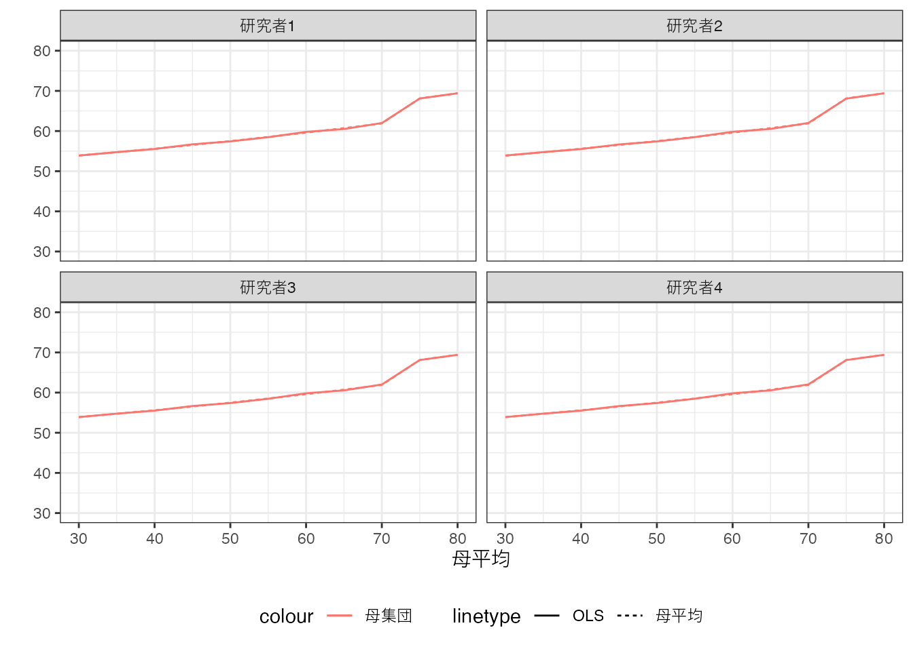
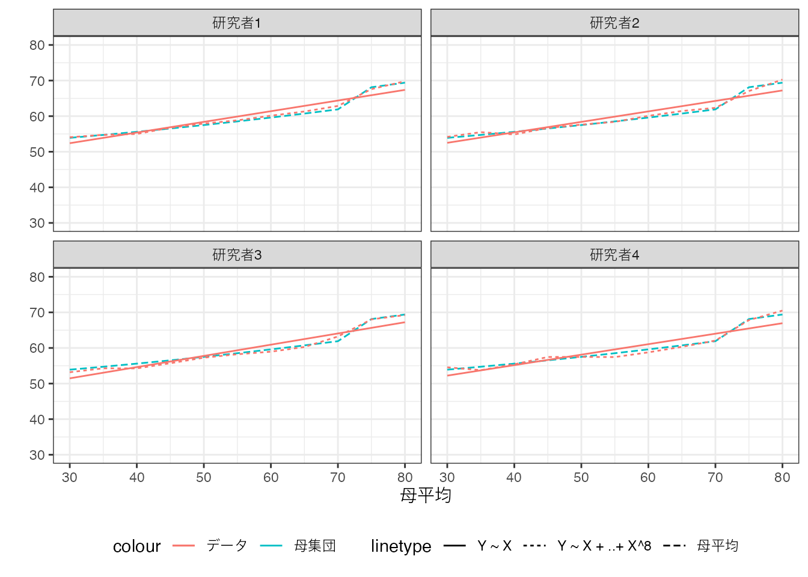

4 母集団上でのOLS
Chapter 2 では、データ上の平均値と母平均との関係性について論じました。 データ上で実施したOLSは、平均値と同様に、母集団の特徴ついて何らかの含意を持つでしょうか？
伝統的な教科書では、研究者が設定した線型モデルが、母平均の妥当なモデルであれば、OLSにより推定された線型モデルは、母平均の優れた推定値であることが強調されます。 しかしながら社会科学のほぼ全ての応用において、研究者が設定するモデルは誤定式化 (misspecification) を犯しており、どのように推定しても母平均から乖離していると想定すべきです。
本章では、誤定式化を犯しているケースにおいても、OLSは母集団の特徴について明確な示唆を持つこと (Angrist and Pischke 2009; Aronow and Miller 2019) を紹介します。 また誤定式化を減らすためには、モデルを複雑化する必要がありますが、パラメタ推定の「精度」との間にトレードオフが生じることも強調します。
このことが持つ示唆は重要です。 経済学などの社会科学における実証研究は、しばしば推定するモデルが単純すぎるという批判を受けてきました。 これは的を射た批判であり、現実社会の複雑さに比べると、如何なるモデルも単純すぎると想定すべきです。 しかしながら、モデルの推定に用いることができる事例数に限りがあることも、同時に考慮する必要があります。 現実に合わした極めて複雑なモデルを推定しようとすると、そのパラメタの推定精度が大幅に低下してしまいます。 限られたデータと現実の複雑性の間で、適切な落とし所を見つけることが重要となります。
4.1 Population OLS
OLSの推定結果は、母集団上での仮想的なOLS (Population OLS) の結果を推定していると解釈することができます。 少しわかりにくい考え方なので、Chapter 2 における数値例とともに確認します。
仮想的な4名の研究者が、同じ母集団の特徴を解明しようとしているとします。 母平均は、全研究者共通で、以下の通りとなります。
もし母集団上で、モデル \(f(X)=\beta_0 + \beta_1X\) をOLS推定できれば、以下の推定結果を得ることができます。
Population OLSの結果は実線、母平均は点線で表しています。 以下の要点に特に注意してください。
Population OLSは、同じ”データ”(母集団)を用いて推定しているので、全ての研究者が同じ推定結果となります。
母平均とは必ずしも一致しません。本例において、母平均は70~75平米にかけて、平均取引価格が急上昇しています。しかしながら、“一直線”のモデルを推定しているため、このような傾向はモデルに反映されません。
二点目は誤定式化の問題と呼ばれ、近年大きな議論がなされてきました。
誤定式化の定義
ある線型モデル \(\beta_0+\beta_1X_1+..+\beta_LX_L\) について、(\(X_1..X_L\) における)\(Y\)の母平均 と モデルを一致させるような \(\beta_0..\beta_L\) は存在しない
4.2 OLS \(=\) Population OLSの推定
現実において実行可能な推定は、母集団ではなく、そこからランダムに選ばれた事例を用いたOLSです。 ここでは50事例を収集したとします。 各研究者は独自にデータ収集を行うため、データ上で行うOLSの結果には違いが生じることに注意してください。
母平均は青の実線、Population OLSは青の点線、データ上でのOLSの結果は赤の実線で示しています。
データ上のOLS推定から得られるモデルは、母集団上でのOLSと一致はしていませんが、かなり近い性質を持っています。 事例数を増やすとさらに近くなることも確認できます。 以下では5000事例まで増やしています。
全ての研究者について、Population OLSとデータ上でのOLSの乖離(赤と青の実践の乖離)は、“目視”できないほど小さくなっています。
Population OLSとデータ上でのOLSは、母平均とデータ上での平均値と類似した理論的関係性を持ちます。
性質: 大表本性質
一致性: 事例数が無限大に大きくなると、データ上でのOLSはPopulation OLSの結果と一致する。
信頼区間: 事例数がパラメタの数に比べて十分多いと、Population OLSの結果についての信頼区間を近似計算できる。
上記の性質はあくまで、データ上でのOLSとPopulation OLSとの関係性を論じていることに、改めて注意してください。 大標本理論は、データ上でのOLSをPopulation OLSの推定値とみなすことを正当化します。
しかしながら、母平均の推定値とみなすためには、誤定式化がないことが前提となります。 なぜならば誤定式化が存在すると、Population OLSと母平均は一致しないので、データ上でのOLSも母平均と一致することはあり得ません。
4.3 モデルの複雑化
実際の応用では、あらゆるモデルは誤定式化を犯している、少なくともその可能性を排除できない、と想定すべきです。 特に社会現象や個人行動の大部分はBlack Boxであり、信頼できるモデルを想定することは、事実上不可能です。 ただし誤定式化による母平均とPopulation OLSの乖離を削減することは容易です。 しかしながら、その代償として、Population OLSとデータ上でのOLSの乖離が大きくなる可能性があります。
モデル \(f(X)=\beta_0 + \beta_1X\) に変わって、 \(f(X)=\beta_0 + \beta_1X + \beta_2X^2\) を推定してみます。 仮想的なPopulation OLSの結果は以下です。

\(f(X)=\beta_0 + \beta_1X\) のPopulation OLSの結果よりも、母平均に近づいていることが確認できます。 さらに\(X\)の8乗まで加えると (\(f(X)=\beta_0 + \beta_1X +.. + \beta_8X^8\))、Population OLSは母平均をほぼ近似できることが確認できます。

一般にモデルを複雑化する (\(\beta\) の数を増やす)と、Population OLSと母平均は必ず近づきます1。
もし母平均の推定が目的なのであれば、極力複雑なモデルを推定すべきでしょうか？ ここで注意が必要なのは、Population OLSは実際には実行できず、事例数が限られたデータ上でのOLSのみが可能なことです。
以下では200事例のデータについて、\(f(X)=\beta_0 + \beta_1X\ (Y\sim X)\) および \(f(X)=\beta_0 + \beta_1X_1 +.. + \beta_8X^8\) をOLS推定しました。

母平均は青の点線で示しています。 データ上でのOLSの結果は、複雑なモデルについては赤の点線、シンプルなモデルについては赤の実線で示しています。
複雑なモデルを推定した結果、単純なモデルよりも、母平均から大きく乖離した箇所が散見されます。 さらに複雑なモデルについての推定結果は、研究者間で大きなばらつきが見られます。
これはモデルを複雑化した結果、データ上の平均値に近づくことに原因があります (Section 3.3)。 限られた事例数のもとでは、小規模な事例のみから計算された平均値が発生します。 このような小規模集計を避けるために、線型モデルを活用した集計を行います。 しかしながらモデルを複雑化すると、この集計が再び上手くいかなくなります。 複雑なモデルをOLSで推定すると、小規模な事例の偶然の偏りを強く反映してしまい、結果母平均から大きく乖離してしまうリスクが高くなります。
この問題は、大規模事例が活用できる場合は、発生しにくくなります。 例えば20000事例について、OLS推定を行った結果は以下です。

母平均は青の点線で示しています。 データ上でのOLSの結果は、複雑なモデルについては赤の点線、シンプルなモデルについては赤の実線で示しています。
複雑なモデルの推定結果は、母平均をよりよく近似していることが確認できます。 対して単純なモデルは、依然として母平均から乖離しています。
このようなモデルの複雑さをめぐる問題は、Bias-Variance トレードオフと呼ばれてきました。 大規模事例を用いることができるのであれば、複雑なモデルが母平均を上手く近似できます。 事例数が少ない場合、複雑なモデルは母平均から大きく乖離してしまう可能性が高く、「妥協的に」単純なモデルを推定することが現実的です。
応用上の問題は、適切なモデルの複雑さについて、理論的な示唆が限られていることです。 次の章では、複雑なモデルであったとしても適切に推定できる手法である、LASSOを紹介します。
4.4 Rによる実践例
以下のパッケージを使用
readr (tidyverseに同梱): データの読み込み
estimatr: OLS推定 \(+\) 頑健な信頼区間の計算
dotwhisker: 信頼区間の可視化
データを取得します。
Data = readr::read_csv("Public.csv") # データ読み込みlm_robust関数を用いてOLSを推定します。
OLS = estimatr::lm_robust(
Price ~ Size + Tenure + StationDistance,
Data,
alpha = 0.05 # 95%信頼区間を計算
) # OLS
OLS Estimate Std. Error t value Pr(>|t|) CI Lower
(Intercept) 19.7205516 0.62170089 31.72032 3.664958e-205 18.5018088
Size 1.0199061 0.02020485 50.47828 0.000000e+00 0.9802978
Tenure -0.6391756 0.01919741 -33.29488 3.014245e-224 -0.6768090
StationDistance -1.3850527 0.06684087 -20.72165 2.316510e-92 -1.5160833
CI Upper DF
(Intercept) 20.9392944 6374
Size 1.0595144 6374
Tenure -0.6015422 6374
StationDistance -1.2540221 6374Estimateが\(\beta\)の推定値を、CI Lower/CI Upperが信頼区間の下限/上限を示します。 例えば、推定された線型モデルにおいて、Size(部屋の広さ)と平均取引価格は正の関係性があります。 さらに信頼区間は \([18.5,20.9]\) なので、Population OLSにおいても正の関係性があることを強く示唆しています。
上記の推定結果は、dotwhisker内のdwplot関数を用いて可視化できます。
各点が推定値、横棒が信頼区間を図示しています。
多重共線性の発生など、例外的なケースは存在します。↩︎